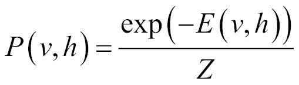
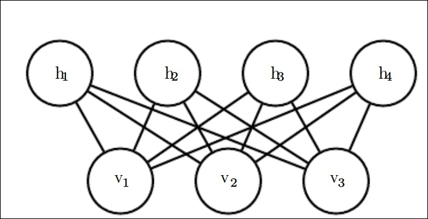
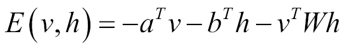
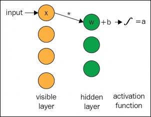
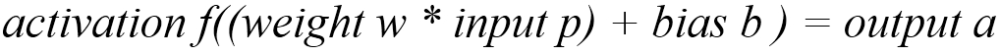
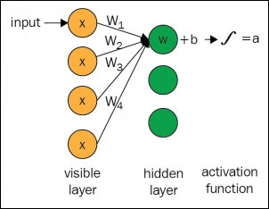
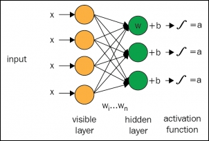

The Restricted Boltzmann machine (RBM) is a classic example of building blocks of deep probabilistic models that are used for deep learning. The RBM itself is not a deep model but can be used as a building block to form other deep models. In fact, RBMs are undirected probabilistic graphical models that consist of a layer of observed variables and a single layer of hidden variables, which may be used to learn the representation for the input. In this section, we will explain how the RBM can be used to build many deeper models.
Let us consider two examples to see the use case of RBM. RBM primarily operates on a binary version of factor analysis. Let us say we have a restaurant, and want to ask our customer to rate the food on a scale of 0 to 5. In the traditional approach, we will try to explain each food item and customer in terms of the variable's hidden factors. For example, foods such as pasta and lasagne will have a strong association with the Italian factors. RBM, on the other hand, works on a different approach. Instead of asking each customer to rate the food items on a continuous scale, they simply mention whether they like it or not, and then RBM will try to infer various latent factors, which can help to explain the activation of food choices of each customer.
Another example could be to guess someone's movie choice based on the genre the person likes. Say Mr. X has supplied his five binary preferences on the set of movies given. The job of the RBM will be to activate his preferences based on the hidden units. So, in this case, the five movies will send messages to all the hidden units, asking them to update themselves. The RBM will then activate the hidden units with high probability based on some preferences given to the person earlier.
The RBM is a shallow, two-layer neural network used as a building block to create deep models. The first layer of the RBM is called the observed or visible layer, the second layer is called the latent or hidden layer. It is a bipartite graph, with no interconnection allowed between any variables in the observed layer, or between any units in the latent layer. As shown in Figure 5.3, there is no intra-layer communication between the layers. Due to this restriction, the model is termed as a Restricted Boltzmann machine. Each node is used for computation that processed the input, and participated in the output by making stochastic (randomly determined) decisions about whether to convey that input or not.
The primary intuition behind the two layers of an RBM is that there are some visible random variables (for example, food reviews from different customers) and some latent variables (such as cuisines, nationality of the customers or other internal factors), and the task of training the RBM is to find the probability of how these two sets of variables are interconnected to each other.
To mathematically formulate the energy function of an RBM, let's denote the observed layer that consists of a set of nv binary variables collectively with the vector v. The hidden or latent layers of nh binary random variables are denoted as h.
Similar to the Boltzmann machine, the RBM is also an energy-based model, where the joint probability distribution is determined by its energy function:


Figure 5.3: Figure shows a simple RBM. The model is a symmetric bipartite graph, where each hidden node is connected to every visible nodes. Hidden units are represented as hi and visible units as vi
The energy function of an RBM with binary visible and latent units is as follows:

Here, a, b, and W are unconstrained, learnable, real-valued parameters. From the preceding Figure 5.3, we can see that the model is split into two groups of variables, v and h. The interaction between the units is described by the matrix W.
So, as we are now aware of the basic architecture of an RBM, in this section, we will discuss the basic working procedure for this model. The RBM is fed with a dataset from which it should learn. Each visible node of the model receives a low-level feature from an item of the dataset. For example, for a gray-scale image, the lowest level item would be one pixel value of the image, which the visible node would receive. Therefore, if an image dataset has n number of pixels, the neural network processing them must also possess n input nodes on the visible layer:

Figure 5.4 : Figure shows the computation of an RBM for a one input path
Now, let's propagate one single pixel value, p through the two-layer network. At the first node of the hidden layer, p is multiplied by a weight w, and added to the bias. The final result is then fed into an activation function that generates the output of the node. The operation produces the outcome, which can be termed as the strength of the signal passing through that node, given an input pixel p. Figure 5.4 shows the visual representation of the computation involved for a single input RBM.

Every visible node of the RBM is associated with a separate weight. Inputs from various units get combined at one hidden node. Each p (pixel) from the input is multiplied by a separate weight associated with it. The products are summed up and added to a bias. This result is passed through an activation function to generate the output of the node. The following Figure 5.5 shows the visual representation of the computation involved for multiple inputs to the visible layer of RBMs:

Figure 5.5: Figure shows the computation of an RBM with multiple inputs and one hidden unit
The preceding Figure 5.5 shows how the weight associated with every visible node is used to compute the final outcome from a hidden node.

Figure 5.6: Figure shows the computation involved with multiple visible units and hidden units for an RBM
As mentioned earlier, RBMs are similar to a bipartitone graph. Further, the machine's structure is basically similar to a symmetrical bipartite graph because input received from all the visible nodes are being passed to all the latent nodes of the RBM.
For every hidden node, each input p gets multiplied with its respective weight w. Therefore, for a single input p and m number of hidden units, the input would have m weights associated with it. In Figure 5.6, the input p would have three weights, making a total of 12 weights altogether: four input nodes from the visible layer and three hidden nodes in the next layer. All the weights associated between the two layers form a matrix, where the rows are equal to the visible nodes, and the columns are equal to the hidden units. In the preceding figure, each hidden node of the second layer accepts the four inputs multiplied by their respective weights. The final sum of the products is then again added to a bias. This result is then passed through an activation algorithm to produce one output for each hidden layer. Figure 5.6 represents the overall computations that occur in such scenarios.
With a stacked RBM, it will form a deeper layer neural network, where the output of the first hidden layer would be passed to the next hidden layer as input. This will be propagated through as many hidden layers as one uses to reach the desired classifying layer. In the subsequent section, we will explain how to use an RBM as deep neural networks.